Summer break has started, and the children have reached their happiest moment. No matter how strong the sun beats down, the amusement park is always full of energy and laughter. The happy voices of children are the best soundtrack of summer. I used my camera to keep their summer laughter. For this summer amusement park shoot, I used Canon's APS-C all-rounder, the EOS R7. I paired it with the RF-S18-150mm F3.5-6.3 IS STM kit lens and the RF15-30mm F4.5-6.3 IS STM ultra-wide zoom. I shot a large number of great photos, and I will share how it felt to shoot them.
Canon EOS R7 + RF-S18-150mm F3.5-6.3 IS STM
F7.1 1/800s ISO800
● The kit lens is not a dud. It is a strong travel shooter.
The Canon RF-S18-150mm F3.5-6.3 IS STM is an APS-C high-zoom lens, often sold as the kit lens. Some people call it a "kit dud" and say the results are poor. But once you use it, you change your mind. On a trip or in a place like an amusement park, this lens, with an equivalent range of about 29 to 240 mm, gives you great shooting convenience. It handles both wide scene shots and distant portrait close-ups. With IS optical stabilization and strong optical design, this tiny, light kit lens takes good-looking photos even at its maximum aperture.
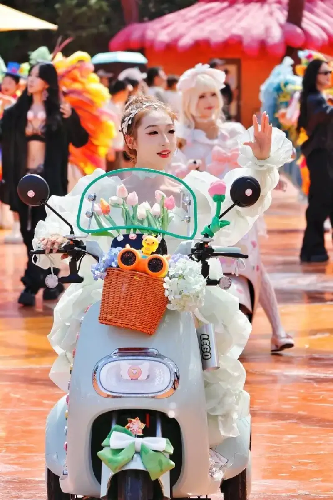
Canon EOS R7 + RF-S18-150mm F3.5-6.3 IS STM
F7.1 1/1600s ISO640
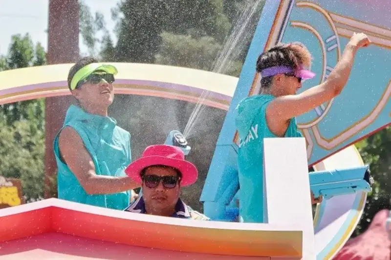
Canon EOS R7 + RF-S18-150mm F3.5-6.3 IS STM
F7.1 1/1600s ISO800
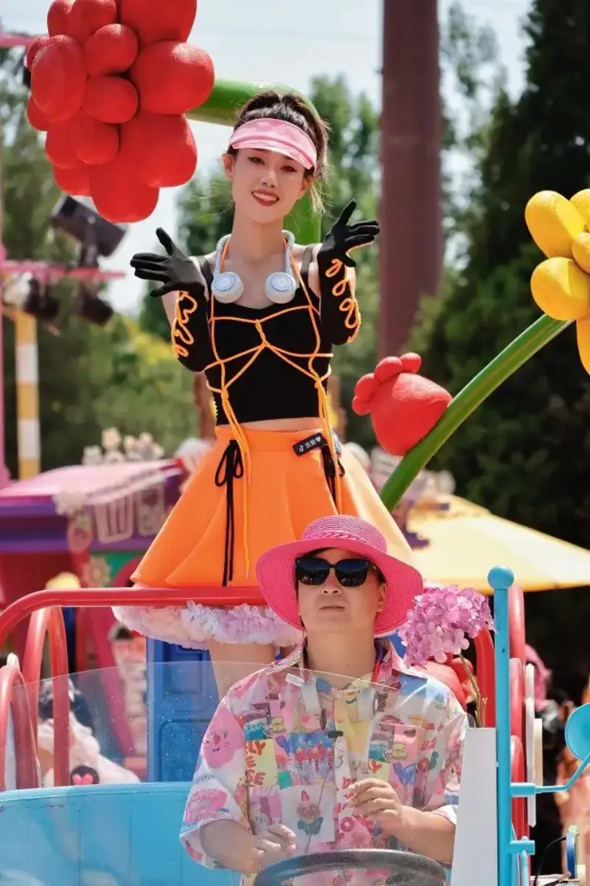
Canon EOS R7 + RF-S18-150mm F3.5-6.3 IS STM
F7.1 1/800s ISO800
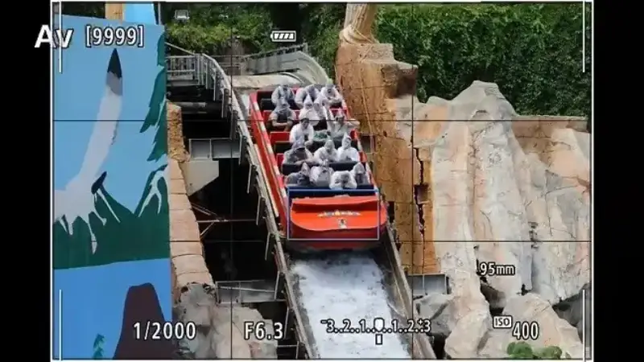
Canon EOS R7 + RF-S18-150mm F3.5-6.3 IS STM
F6.3 1/1250s ISO400
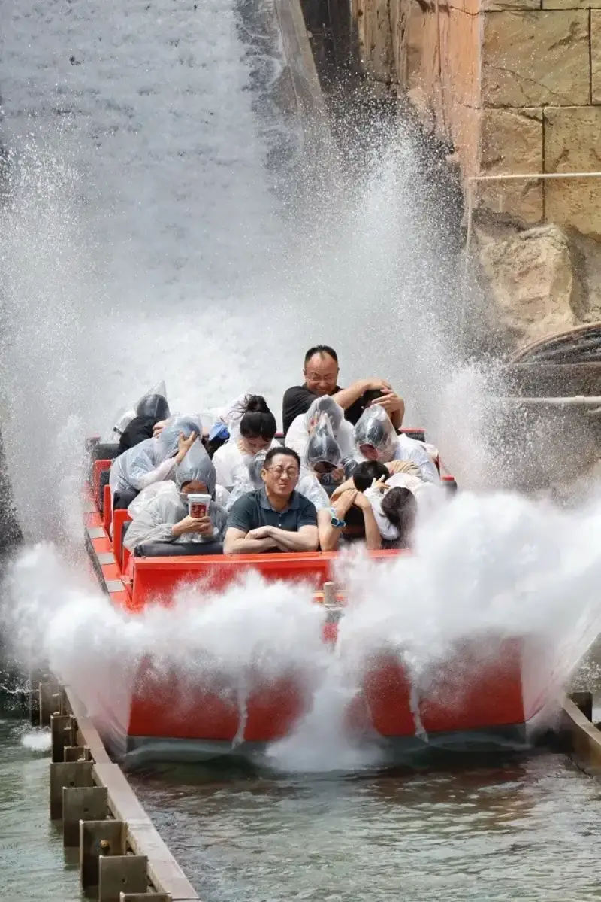
Canon EOS R7 + RF-S18-150mm F3.5-6.3 IS STM
F6.3 1/1000s ISO400
During the park's parade of floats, I used this lens to shoot a lot of candid portraits. I shot at both the long end and the wide end, and the speed of grabbing the moment was top-class. Besides the light, flexible lens, the strong autofocus of the Canon EOS R7 made shooting much easier and faster. The EOS R7 has the second-generation Dual Pixel CMOS AF. It uses deep learning to better recognize and track subjects. It tracks a person's eye and face, and also recognizes and tracks animals (cats, dogs, birds) as well as motorcycles and race cars. Its 651 focus points cover almost the whole sensor, which makes shooting calm and efficient. I used eye AF tracking and continuous AF. Whether the person moved or turned, the camera locked the eye first, and focus misses were rare.
Eye AF tracking on a portrait
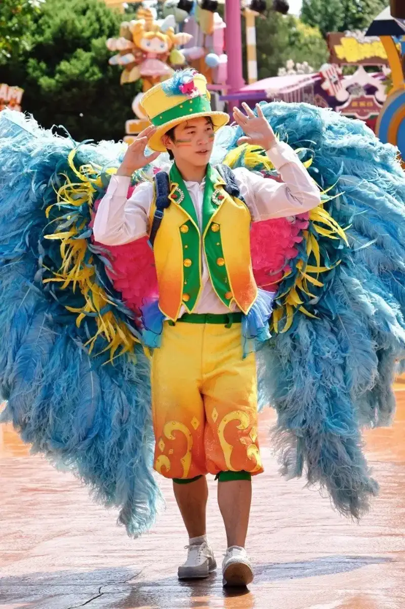
Canon EOS R7 + RF-S18-150mm F3.5-6.3 IS STM
F6.3 1/1600s ISO800
● Ultra-high-speed burst freezes great moments
The Canon EOS R7 has excellent ultra-high-speed burst. Its fastest burst rate reaches 30 frames per second, which matches the top flagship cameras. So it is no exaggeration to call it the king of APS-C. With the electronic shutter, you can turn on the 30-fps ultra-high-speed burst. Paired with strong tracking, it makes the high-speed Splashwater ride easy to shoot. I used the RF-S18-150mm lens to shoot the whole run as the Splashwater ride plunged into the water. Pick any frame, and you can clearly see the tense faces of the riders. It is fun that some people had wrapped themselves up tight, while others held up their phones to film. On the screen, you can feel both their tension and their joy.

Ultra-high-speed burst of the Splashwater ride
Thumbnails of the burst shots
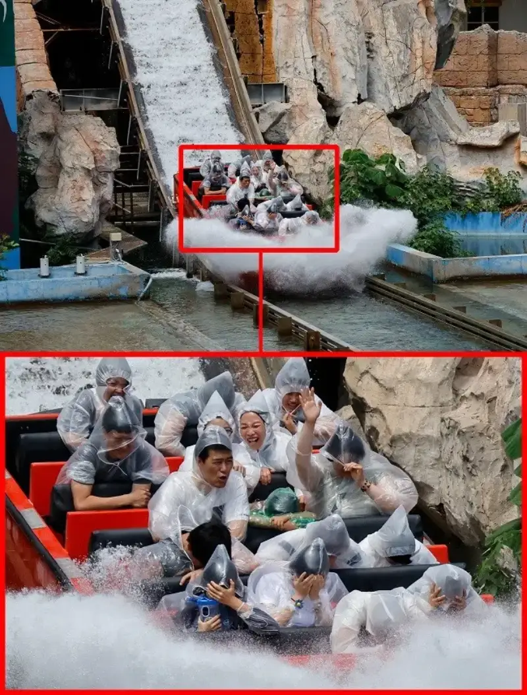
Zoom into a detail from the burst
Canon EOS R7 + RF-S18-150mm F3.5-6.3 IS STM
F6.3 1/1250s ISO400
● 0.5-second pre-shoot solves the candid problem
Beyond ultra-high-speed burst, the Canon EOS R7 has a RAW burst mode with 0.5-second pre-shoot. This feature greatly raises the success rate of candid shots. Even people with no candid experience can easily catch the moment without regret. Usually, by the time you see the moment you want in the viewfinder and press the shutter, the moment is already gone. The 0.5-second pre-shoot keeps the 0.5 seconds before the shutter press as a burst. So you can capture the frame that existed before you pressed the shutter. When I framed a roller coaster, the long lens gave me a very narrow angle. The moment the coaster entered the frame, it hit a sharp bend, and the front row was almost gone. With pre-shoot on, the camera kept 15 frames from the 0.5 seconds before the burst started. It even captured the instant before the coaster entered the frame.
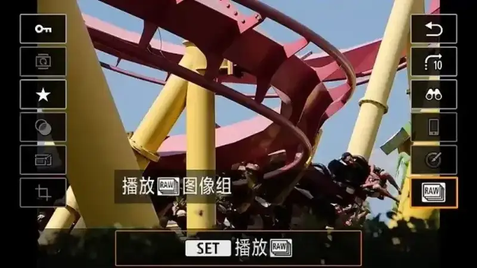
RAW burst mode with 0.5-second pre-shoot
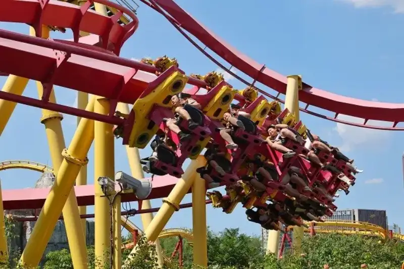
Canon EOS R7 + RF-S18-150mm F3.5-6.3 IS STM
F5 1/1600s ISO200
● An ultra-wide lens you can hand-hold in low light
The RF-S18-150mm F3.5-6.3 IS STM covers a wide range of focal lengths. But if you need a much wider scene, you may want an ultra-wide lens. This time I also brought the RF15-30mm F4.5-6.3 IS STM. It is a full-frame lens, but on the R7 it gives a wide-angle view of about 23 mm equivalent. With about 5.5 stops of optical stabilization, it makes second-level hand-held shots possible.
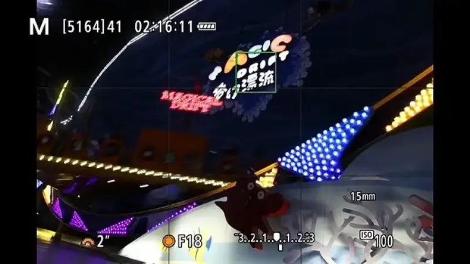
Shooting in an indoor playground
Canon EOS R7 + RF15-30mm F4.5-6.3 IS STM
F18 2s ISO100
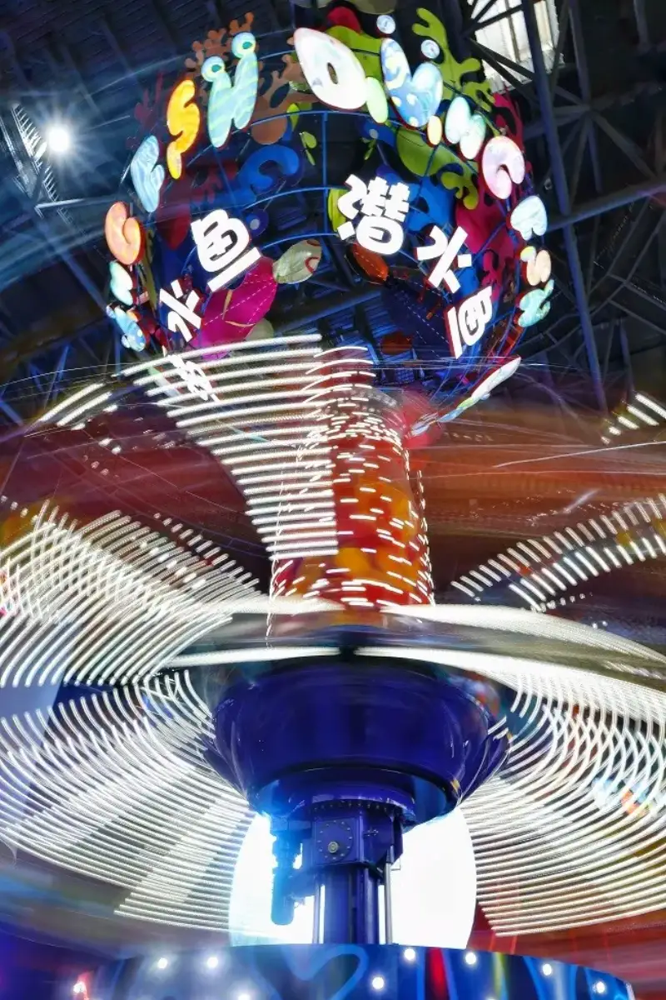
Canon EOS R7 + RF15-30mm F4.5-6.3 IS STM
F8 1s ISO100
In the indoor playground, I lowered the shutter speed to shoot slow, flowing light trails of the spinning chairs and the pirate ship. But the park does not let visitors bring tripods inside, so I tried hand-held slow-shutter shots. At one or even two seconds, the success rate of hand-held shooting was surprisingly high. You cannot predict what light trails these fast-spinning rides will drag out. But if you shoot more, some frames will surprise you. That owes a lot to the ultra-wide image quality and the optical stabilization of this lens.
● 4K Clog3 video and high frame rate video
The Canon EOS R7 has strong ultra-high-speed burst and focus. Its video is also no small matter. On this camera you can record video up to 4K 60p. If you want finer detail, you can use 4K at 29.97 fps made by 7K oversampling. If you need to grade the video later, you can record in the common 4K Clog3. The flat footage leaves plenty of room for color grading, and a clear, bright look comes easy. For fast, exciting moments, use the HD 119.88 fps high frame rate to catch great video, and it feels even better.
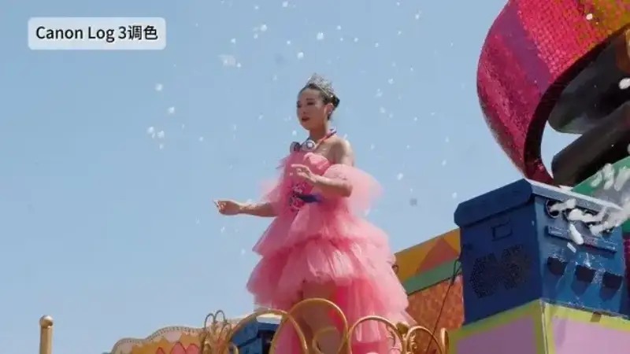
Recording 4K Clog3 video
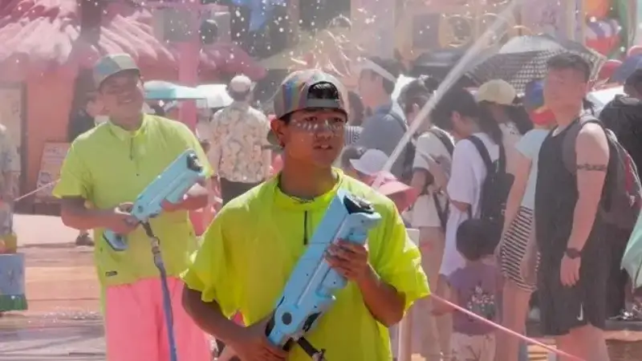
Recording high frame rate video
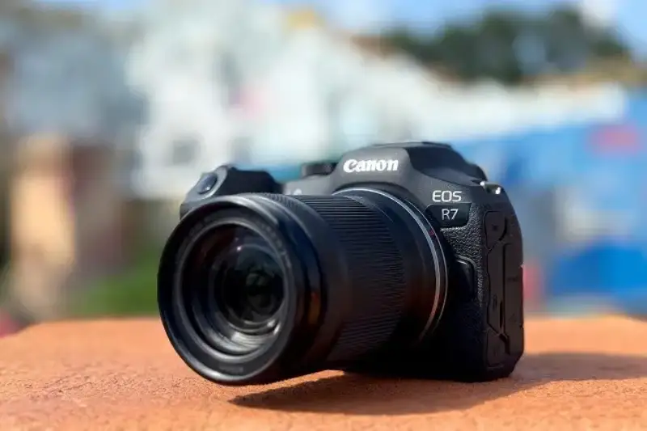
● After the test shoot
Summer is hot, but children always look forward to it. If you use the camera and lens well and catch some great moments of childhood joy, you will be proud of it as a parent. The Canon EOS R7 with the RF-S18-150mm F3.5-6.3 IS STM fits amusement park shooting well. It covers a wide range of focal lengths and takes strong images. With its ultra-high-speed burst and strong autofocus, you can shoot great high-speed moments. Its video is also a strength, and high-quality 4K or high-frame-rate video has a professional standard. This summer, take your child to the amusement park for a fun time. Bring your Canon camera, because the great moments of childhood should not be missed.